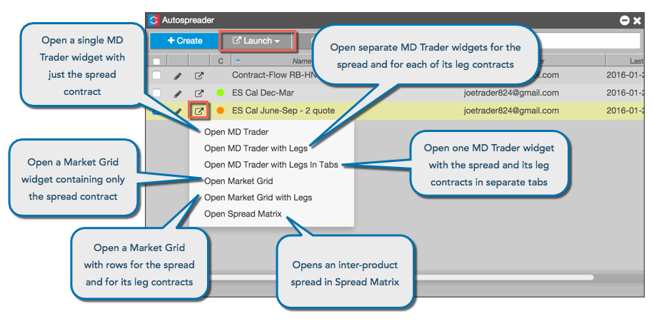
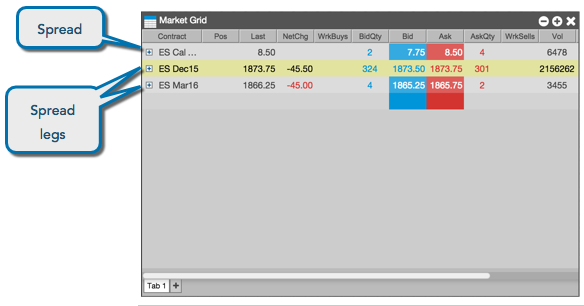
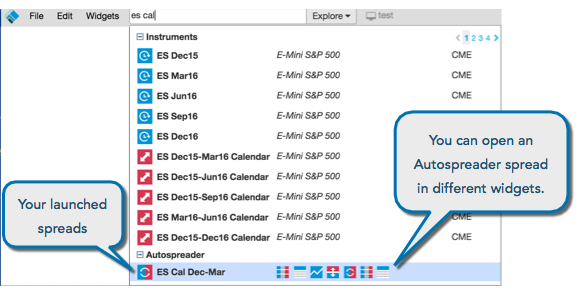

Launching a spread makes the spread available for trading as a single instrument. You launch the spread from the Autospreader widget.

The following shows a spread launched with its spread legs in a Market Grid widget.

After you launch an Autospreader® spread the first time, you can use it like a normal instrument. For example, the spread will appear in searches, as shown.
